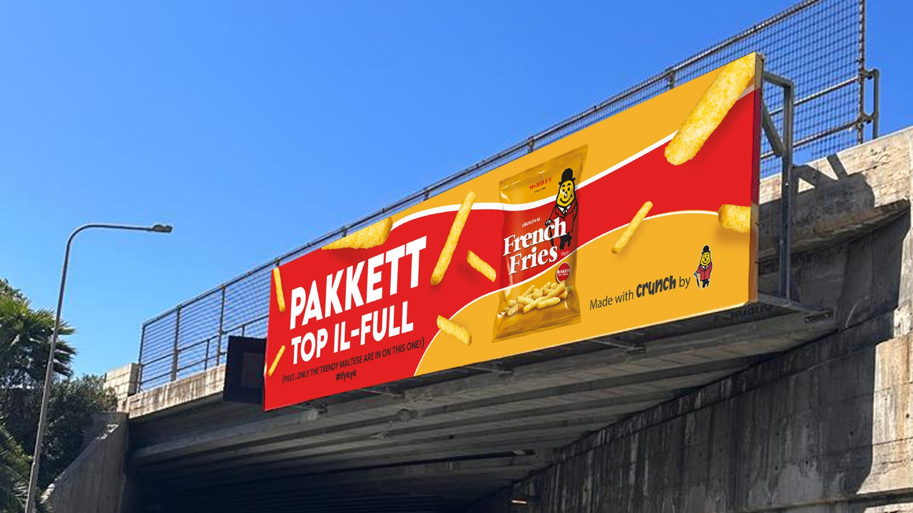
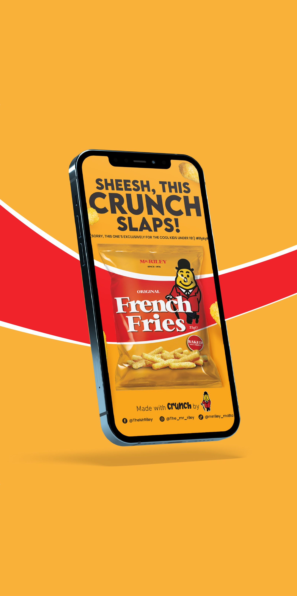
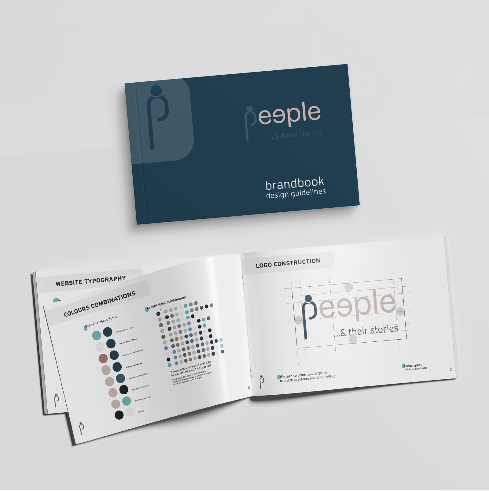
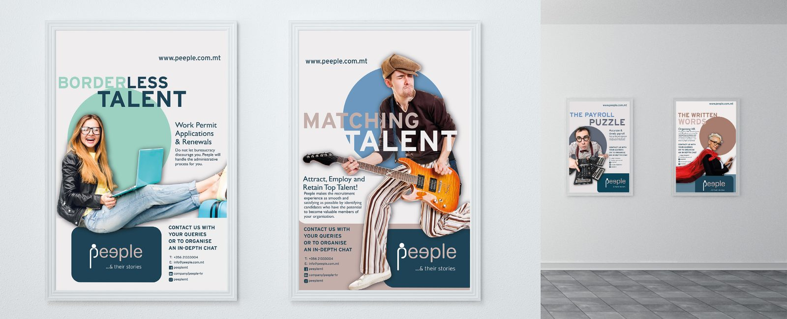
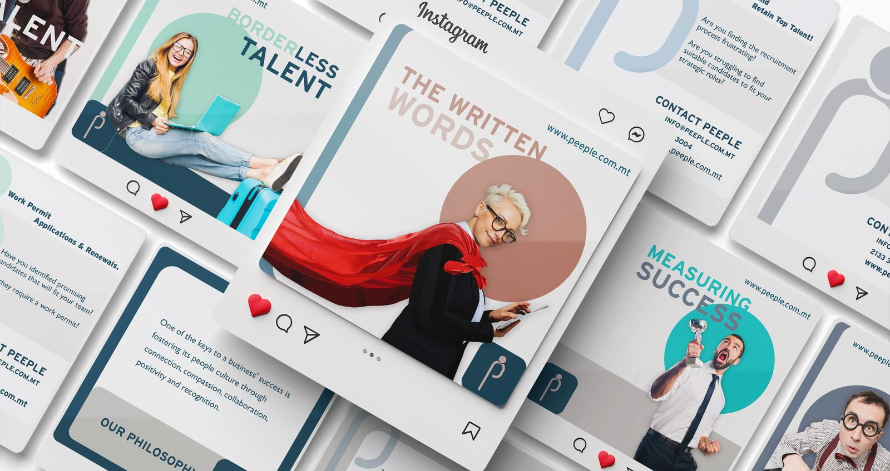
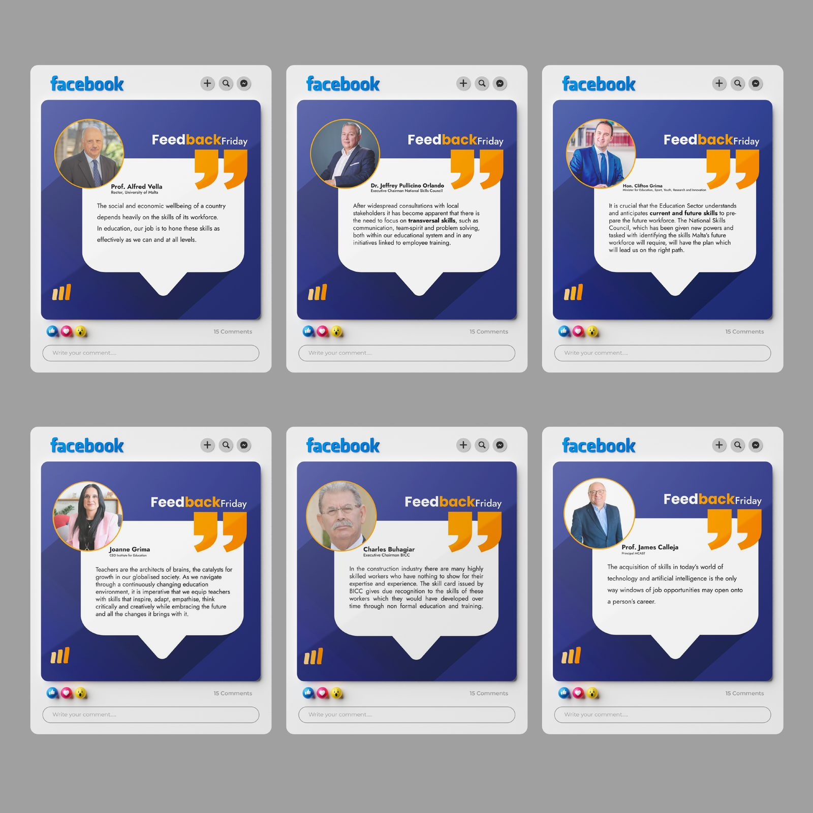
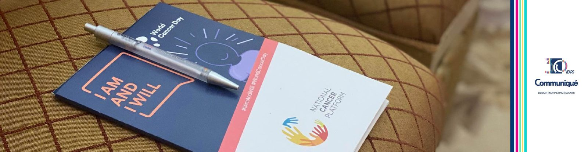

At Communiqué I led design for social, web and Google/Meta campaigns across more than 20 brands, from the billboard on the road to the post in the feed. Three brands show how each campaign travels through outdoor, print, social and web.
A campaign at Communiqué starts from a client brief and ends as a set of artworks for every medium the client buys: billboards and bus wraps, leaflets and brochures, Facebook and Instagram posts, web banners and short video. My job was to turn each brand’s concept into a system that holds across all of them, and to brief and review the interns who produced the adaptations.
A campaign is not a key visual. It is a brand’s idea surviving a 12-metre billboard and a 1080-pixel square.
Snack launch for Pakkett. The crunch is the product, so the crunch is the campaign: bold yellow and red, the fries breaking the frame, Maltese copy on the road and short punchy lines on mobile. Outdoor, social and a video layout.


Identity and launch for peeple, a recruitment agency: logo, brandbook (typography, colour, logo construction), A1 posters, brochures and a social system built on the “Borderless talent / Matching talent” idea.



Beyond launches: testimonial series for NSC on Facebook, awards campaigns run on a content calendar (EPALE Malta Awards 2023), and Communiqué’s own print and recruitment pieces.


This is where I moved from product design into marketing: learning to design for a media plan, to write a brief that an intern can execute, and to keep one idea consistent from a roadside billboard to a paid post. It is the ground under the campaigns I run today with measurement attached.